Mathematical science of computation
and structured programming
Cultures of Programming — Part 4
Tomas Petricek, Charles University, Prague

Mathematical culture
Proving program properties
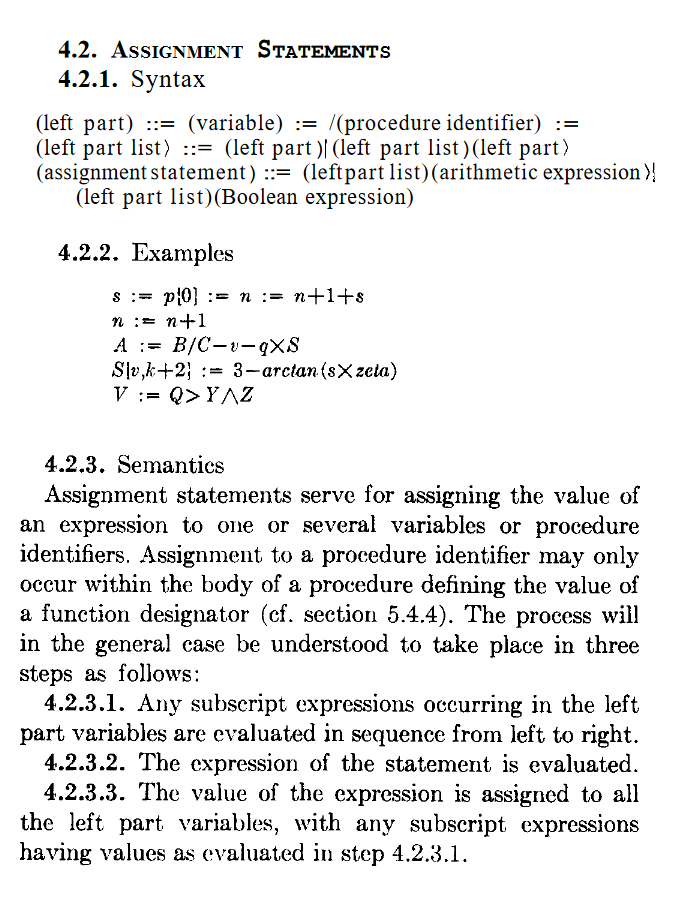
Mathematical science
of computation
Programs as formal entities
Algorithms as objects to study
Formal mathematical reasoning
Algol paradigm
Algol paradigm
Mathematical Science (McCarthy, 1962)
- Two procedures (functions) are equivalent
- Procedure terminates for all input data
- Translation correctly translates procedures
- Translation increases efficiency
McCarthy's factorial proof
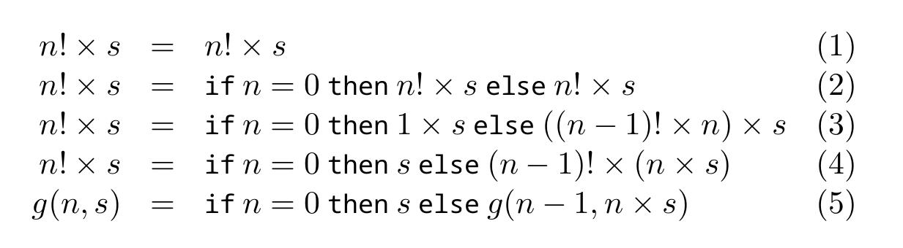
Algol paradigm
Proving programs correct
-
Peter Naur (1966)
Proofs of algorithms by general snapshots -
Robert Floyd (1967)
Assigning meaning to programs -
Tony Hoare (1969)
An axiomatic basis for computer programming
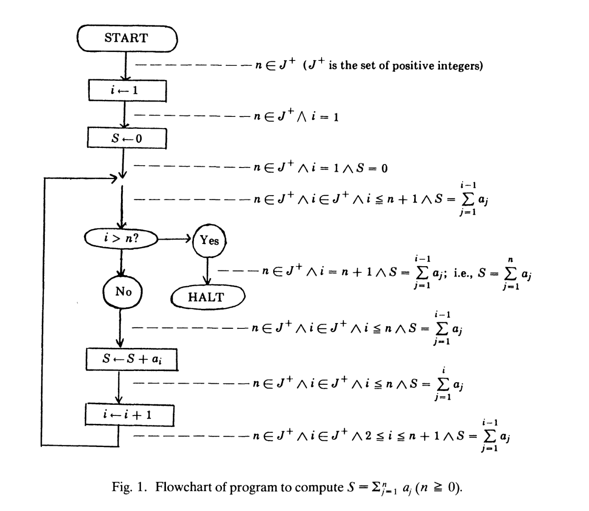
Floyd (1967)
Cites McCarthy and uses a subset of Algol
But uses flowcharts!
Common visual representation of programs at the time
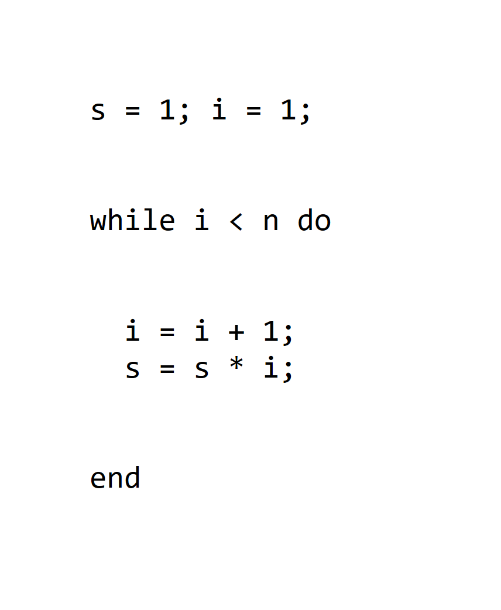
Hoare (1969)
Annotate programs using
tripes \(\{P\} \,c\, \{Q\}\) where:
- \(P\) pre-condition holds before
- \(c\) command to run
- \(Q\) post-condition holds afterwards
Using modern notation for
(now called) Hoare-triples
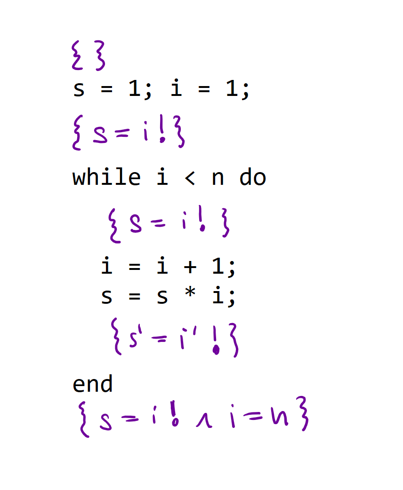
Hoare (1969)
Reasoning about programs
using Hoare triples
Composition rule!
If \(\{P\}\,c_1\,\{Q\}\)
and \(\{Q\}\,c_2\,\{R\}\)
then \(\{P\}\,c_1;c_2\,\{R\}\)
Proofs of programs in practice
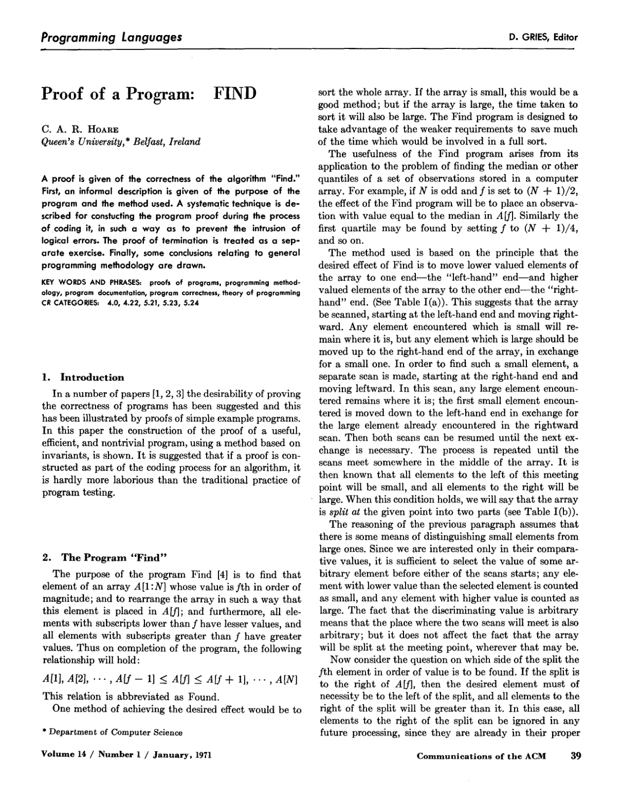
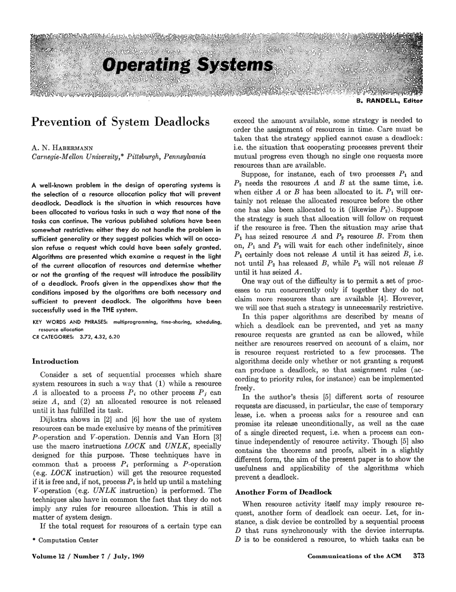
Proofs of programs in practice
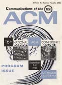
Prevention of deadlocks (1969)
- Abstract algorithm written as pseudocode
- Model using states and transitions
- Not actual source code!
Proof of FIND (1971)
- Part of Hoare's QuickSort algorithm
- Find \(f^{th}\) element in an array and rearrange
- \(A[1],\ldots,A[f-1]\leq A[f]\leq A[f+1],\ldots,A[N]\)
- ... it may be possible to enlist the aid of a computer
Mathematical culture
Structuring programs
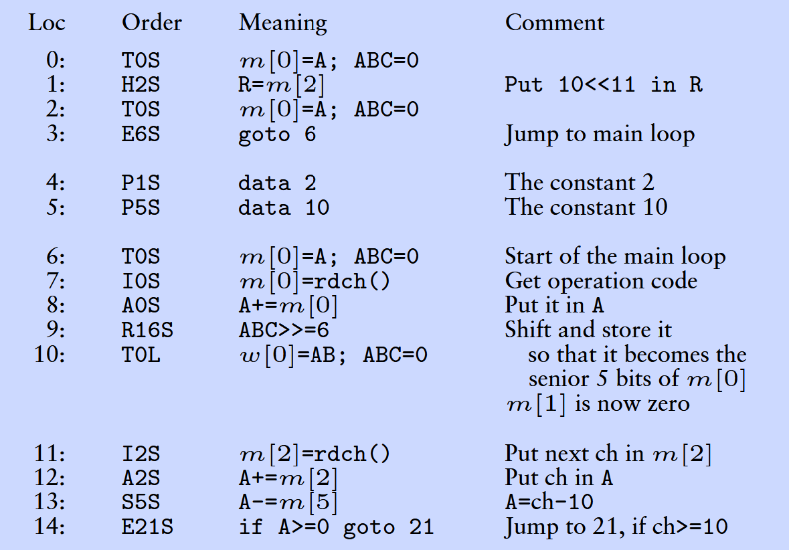
EDSAC instructions
EDSAC initial orders (first few instructions)
Low-level assembly-like
Write to register
Transfer control (jump)
Basic arithmetic
Structured programming
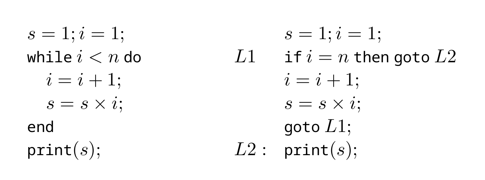
Block-based languages
- Control structures like
whileandifinstead ofgoto - Popularized by Algol
For structured programming
- Supports reasoning and readability
Against structured programming
- Can we trust compiler generated code?
- Can we really express everything well?
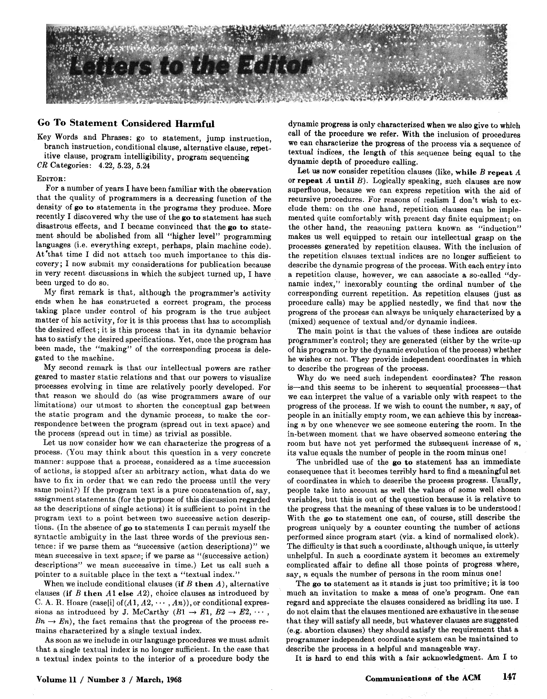
Dijkstra (1968)
"...the quality of programmers is a decreasing function of the
density of go to statements in the programs they produce."
"...the go to statement should be abolished from all 'higher level'
programming languages"
Dijkstra on the go to statement
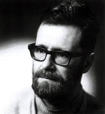
Making programs understandable
- Programs are read more than written
- Shorten conceptual gap between static program and dynamic process
You do not need go to
- Structured program theorem (Böhm–Jacopini)
- Any flowchart can be encoded using just three control structures (sequence, selection, iteration)
Formal reasoning about programs
Why structured programming helps
- Recall that if \(\{P\}c_1\{Q\}\) and \(\{Q\}c_2\{R\}\) then \(\{P\}c_1;c_2\{Q\}\)
- Works better with block-based languages!
- No need to model register and memory states
Managerial culture
Structuring teams
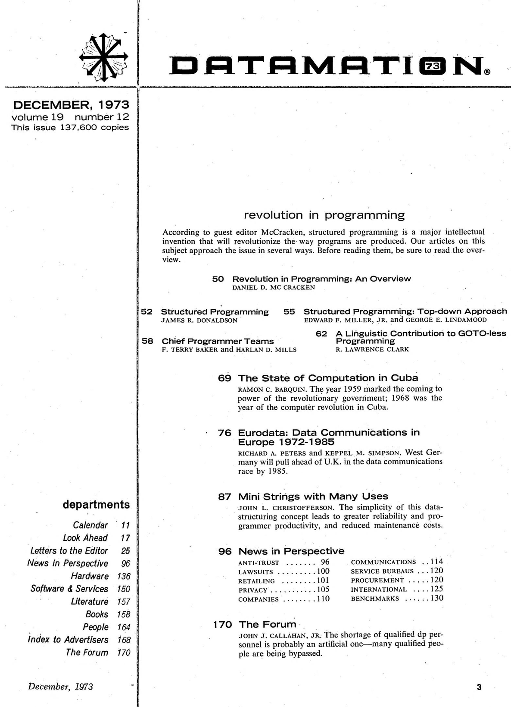
Revolution in programming
(Datamation magazine, 1973)
According to guest editor McCracken, structured programming is a major intellectual invention that will revolutionize the way programs are produced. Our articles on this subject approach the issue in several ways. Before reading them, be sure to read the overview.
Chief Programmer Teams
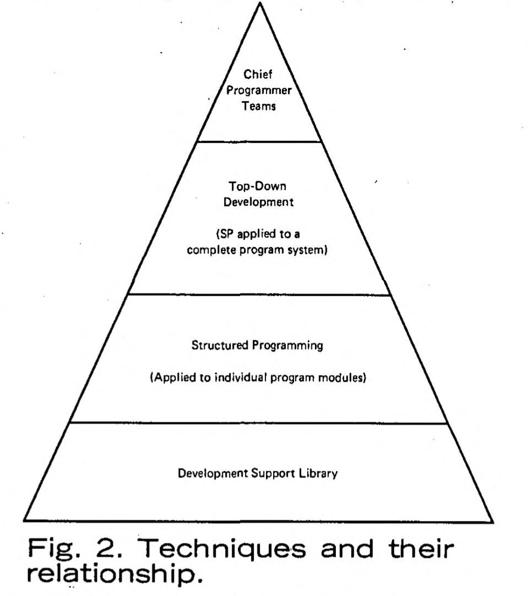
Project management at IBM
- New York Times data bank project
- Overall structure by one person
- Chief programmer + support
Structured programming
-
Top-down design of programs vs.
top-down management of teams
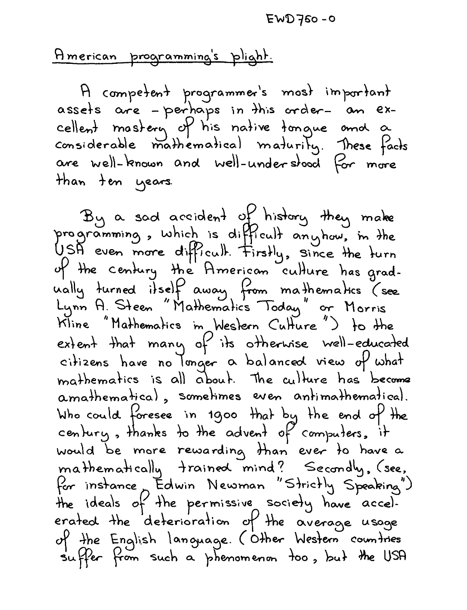
Dijkstra's response
How to program if you cannot
"the prevailing management philosophy [makes] companies as independent as possible of the competence of their employees"
Structured programming
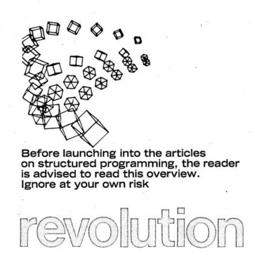
Mathematical culture
- Mathematical reasoning
- Compositional semantics
Engineering culture
- Understanding code
- Individual responsibility
Managerial culture
- Top-down software development
- Structuring teams
Cultures of Programming
Home Continue to Part 5